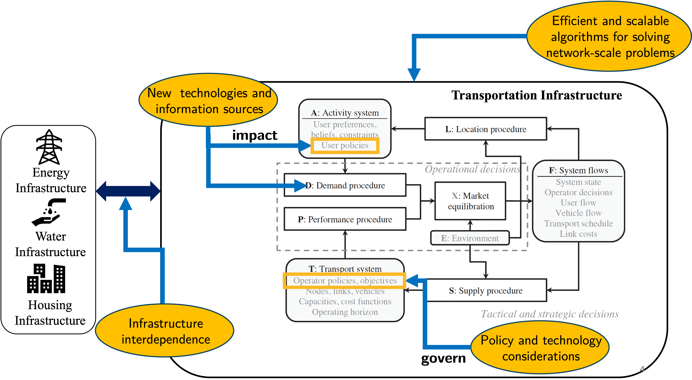

The graphic below highlights the research focus at the TML lab in yellow ellipses within the context of transportation and the integrated infrastructure framework.

For those unfamiliar, the Manheim-Florian-Gaudry framework, detailed in Manheim (1980) and Florian and Gaudry (1980), and refined in Chow (2018), models transportation systems through the interaction between an activity system (A) and a transportation system (T). It employs a demand procedure (D) to derive transportation needs from the activity system and a performance procedure (P) to evaluate the transportation system’s response. This framework achieves market equilibrium (X) between the supply (S) and the demand (D) resulting in a set of system states (F), including operator decisions, user flows, and link costs, at a short-term operational level. Long-term adjustments, influenced by factors like changes in locations (L), travel times, or resource needs, affect demand and supply and require feedback for resource allocation and design changes. Environmental factors (E), such as weather and urban density, further distinguish system performances across different cities.

Learn more about codes and products on our group's Github page.